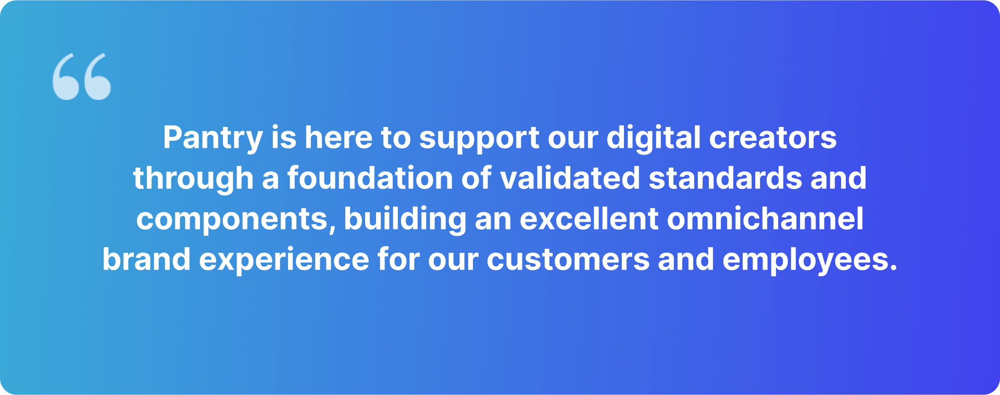
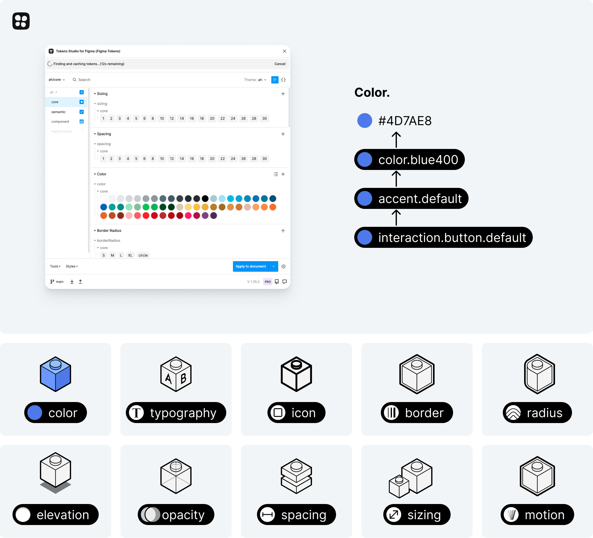
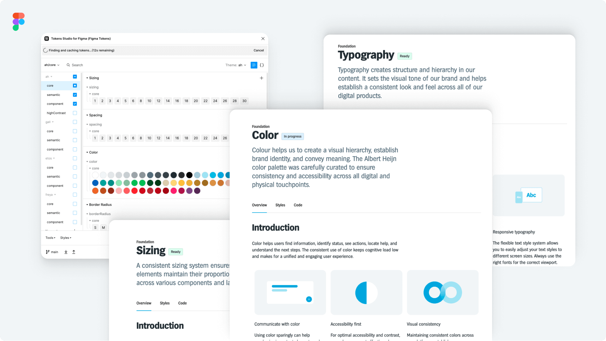
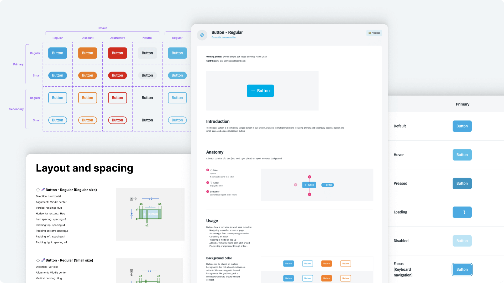
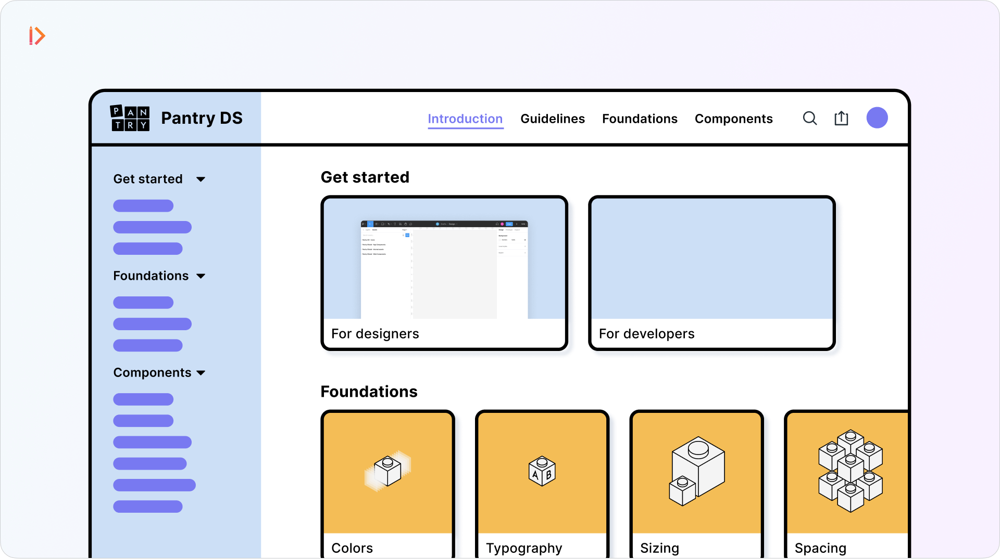
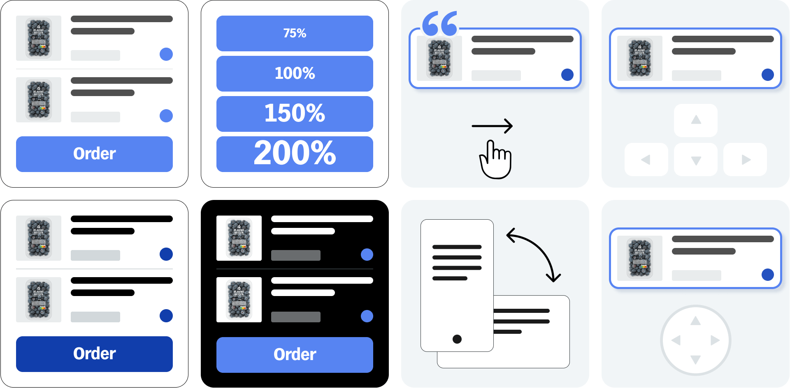

Pantry Design System
Ahold Delhaize started its Design System with an ambitious goal: unite existing initiatives to standardise its design and development efforts to deliver a consistent and high-quality user experiences across all touchpoints.
Key results
platforms enabled
The same codebase for iOS, Android, Flutter & web
tokens created
Ensures a perfect alignment between UX, Tech & brands
components built
in 1 year, fully documented & aligned with development
future time saved
Thanks to the UX/Dev collaboration
Problem statement
The current system is prone to inconsistency, inefficiency & low quality
Context — the need for a Design System
What is a design system and why it matters.
A design system is a standardized approach to managing design
that promotes consistency and eliminates redundancy across
various pages and channels.
It includes items such as colors, typography, spacing, and UI elements (e.g., buttons, forms, navigation controls) that are clearly defined to ensure product coherence.
Top challenges
#1 There is no dedicated design system team
The project started as a design initiative, so it quickly became paramount to
convince management to allocate time and budget to keep and scale the project up.
Our approach: Present the benefits of a
design system to management with achievable goals on the
short and long term in order to get focus, budget and
support.
#2 Launch and maintain the system across 4 platforms
The current system is inconsistent between platforms due to a lot of legacy. We need to create the
ground for long-term alignment.
Our approach: Work on the audit, starting with foundations. Map all styles
mismatching and make some first hard decisions. Iterate over time.
#3 Start from scratch while showing progress
The amount of work ahead was important, but it was also important to show progress not to loose the
momentum and the curiosity from the community.
our team and efforts to build enthusiasm.
Our approach: Create channels of communications to showcase monthly effort,
progress, and stir up the enthusiasm of the community.
Phase 0 — Before the journey begins.
The project began by interviewing designers, developers, managers, and product owners about the current system while gathering all available assets and components for our investigation. To stay focused, the team split into two "Design streams", each with its own objective:
Design Stream 1
System & governance
- Creating a high-level roadmap for the first 6 months
- Building presentations for higher management to get buy-in
- Decide on the governance model to structure a winning team
Design Stream 2
Audit & libraries
- Audit of current foundations and components
- Creating the set of libraries and sandbox files
- Start creating some draft foundations and components
Auditing the current 'system'
We performed an analysis of all the visual and technical elements of our digital products, from websites to Apps. We also looked at famous design systems like Carbon, Material3, Spectrum, and many more. This helped us in finding the right set-up for our organisation. Our audit revealed some main insights:
- A lot of inconsistency both in design, and in the code
- Components with vague definition and overlapping usecases
- Foundations that are open for interpretation, and not documented
Design system's ambition
One strong statement that would guide all of our decisions along the project.
Phase 02 — Tokenising the design system
Design tokens are the small, repeatable design decisions that define a system's visual style. They replace static values, like hex codes, with descriptive names. While initially tedious, this approach proves invaluable once the first set of foundations is implemented, offering long-term benefits.
Foundations — The backbones of the system
The tokens let us systemize all of our foundations, from core to semantic values. They all rely on similar naming conventions, and ranged from colors, textstyles, spacing, borderRadius, and more...
Components — Creating value for end-users
üߨ The Official components
All components that go through the Design System process, from the request to the design, refinement, building, testing and accessibility checks. They are consisdered as official only once available on all platforms.
üß™ The Beta components
These reflect the exact states of the current and existing components present in the code. They didn't go through the Design System process yet, but are available to designers, and monitored for future improvement.
Our single source of truth
To ensure the consistency and increase the adoption of the system, we used zeroheight as the accessible and clear platform to document all our design decisions, processes, and foundations/components.
Phase 03 — Building the community
There is no sustainable design system without a suporting community and stakeholders. In order to maintain interest and excitment around the system, we introduced:
- A monthly demo, showcasing the latest components and activities of the team
- A monthly newsletter, recapitulating the main progress
- A centralized Teams channel to collect and answer all system-related questions
- An official form collecting all requests of new components
- A resource and Q&A section
The accessibility challenge
An accessible design system makes it easier for designers to create products with inclusive customer experiences for all users that don’t discriminate our users with disabilities. Besides, as of 28 June 2025, companies must ensure that the newly marketed products and services covered by the Act are accessible. To achieve AA, we provide foundations that support text scaling and high-contrast mode, and components that are "Born accessible" (touch area, voiceOver, scalable layout, ...).
How the system continues to mature
A design system is in constant evolution. In the coming time, we expect the team to
- Make the system available to more platforms
- Open and guide other teams to contribute to the system
- Automate the codeGen of all tokens
What I take away from this project
This project gave me a chance to play at the “tree and forest levels” of the organisation. Overall, I've learned:
- What it takes to build a design system (almost) from scratch.
- The process of creating foundations and components for 4 platforms in a streamlined way.
- How important buy-ins from stakeholders are...
Kudos to Dominique, Romijn, Joost, Rene, Dave, Michael & Eduardo